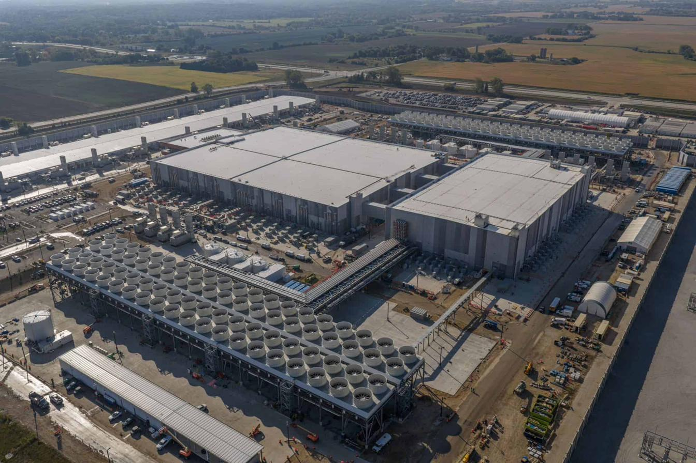

DIGITAL
SOVEREIGNTY
Learn what AI data centers really cost — and how to fight back.
The “cloud” is not a cloud. It is a physical industry of warehouses, water lines, and power plants being built in real communities — often in secret. This is a step-by-step field guide: understand the infrastructure, see the damage, and learn the legal tools that put the power back in residents’ hands.
What does your AI use add up to?
IllustrativeCooling water for the servers handling your prompts.
Electricity pulled to power that compute.
Your usage is tiny — but it never happens alone.
This is a relative visualizer, not a measurement. It shows how small individual use compounds across millions of people — the reason a single person’s habits feel harmless while the industry’s footprint is enormous. Exact per-prompt figures are widely disputed; here’s why this project doesn’t publish them →

FOUR STEPS,
ONE GOAL
Move through the guide in order, or jump to what you need. By the end you’ll know enough to act.
Understand
What an AI data center actually is — and what it pulls from the ground: water, power, and land.
STEP 02See the harm
The documented impacts on people, health, land, and local economies — and the secrecy that hides them.
STEP 03Fight back
The legal toolkit: zoning, FOIA, NDAs, utility interventions, the 10th Amendment, and community benefit agreements.
STEP 04A better path
What genuinely sustainable, “green” AI infrastructure could look like — and why we have to demand it.